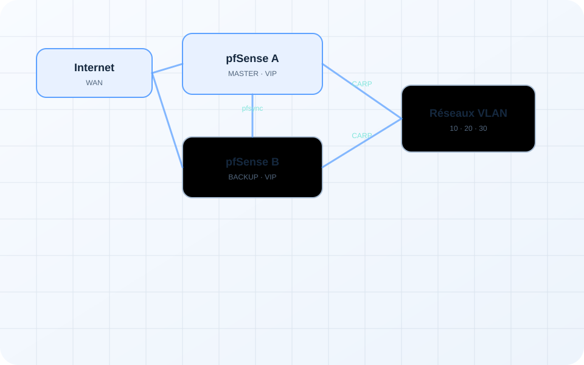
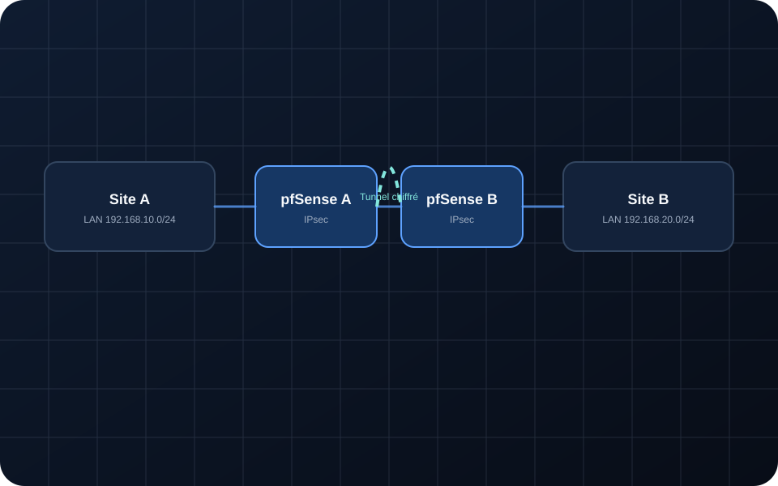
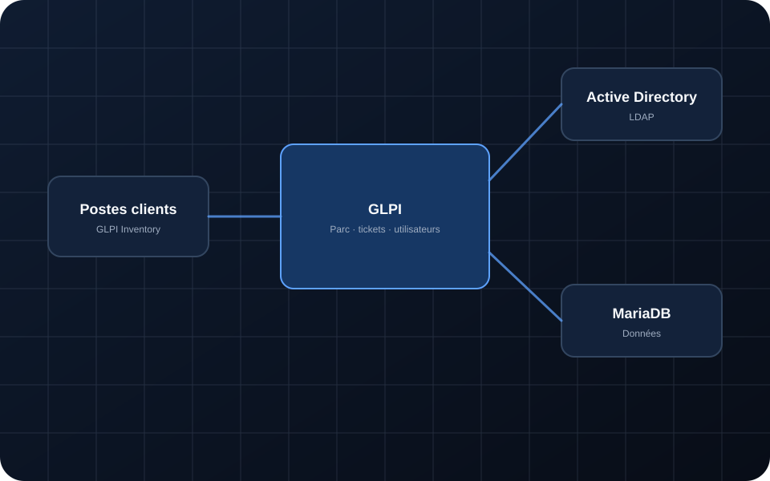
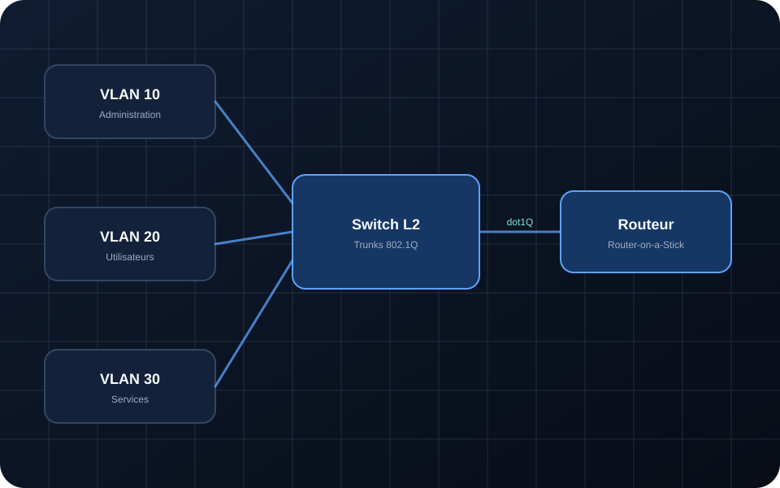
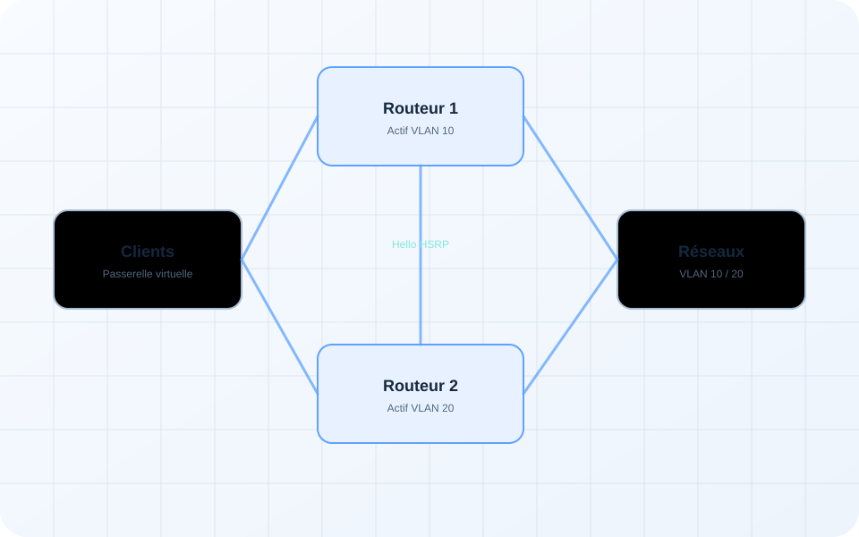
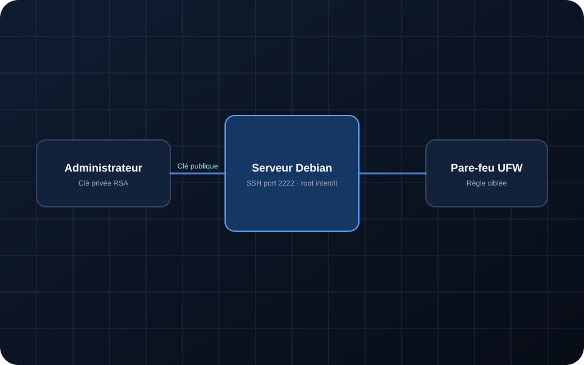
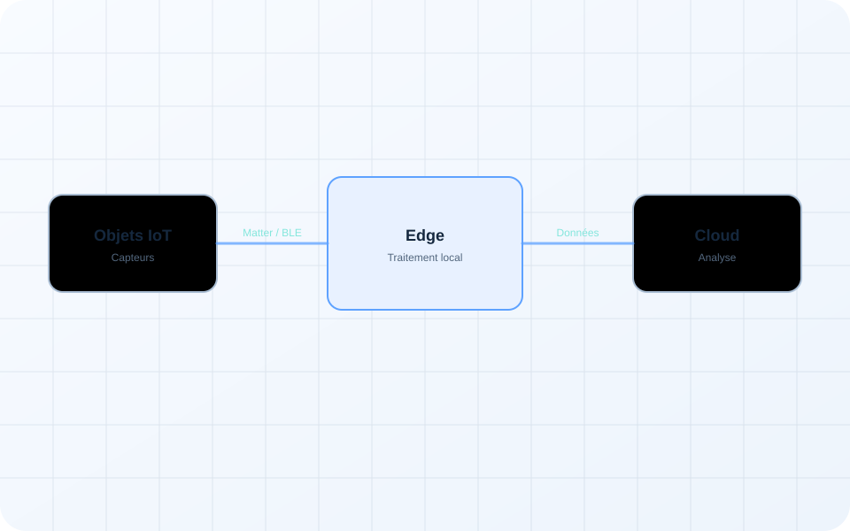

Architecture01
Infrastructure multi-bâtiments sécurisée
Architecture complète avec redondance réseau, pare-feux HA, virtualisation, services et supervision.
Des laboratoires et études techniques réalisés pendant le BTS SIO SISR, reformulés pour une lecture professionnelle.
Architecture complète avec redondance réseau, pare-feux HA, virtualisation, services et supervision.

Déploiement et administration de services Windows et Debian dans un environnement de laboratoire.

Segmentation réseau et basculement d’une passerelle virtuelle entre deux pare-feux.


Surveillance des hôtes, collecte SNMPv3, déclencheurs, alertes et cartographie.

Inventaire des équipements et centralisation des utilisateurs et des incidents.

Segmentation logique avec trunk 802.1Q, Router-on-a-Stick et distribution DHCP.

Mise en place d’une passerelle virtuelle et tests de basculement entre deux routeurs Cisco.

Authentification par clés RSA, port personnalisé, interdiction root et filtrage UFW.

Analyse de l’évolution des objets connectés et des enjeux de segmentation et de sécurité.